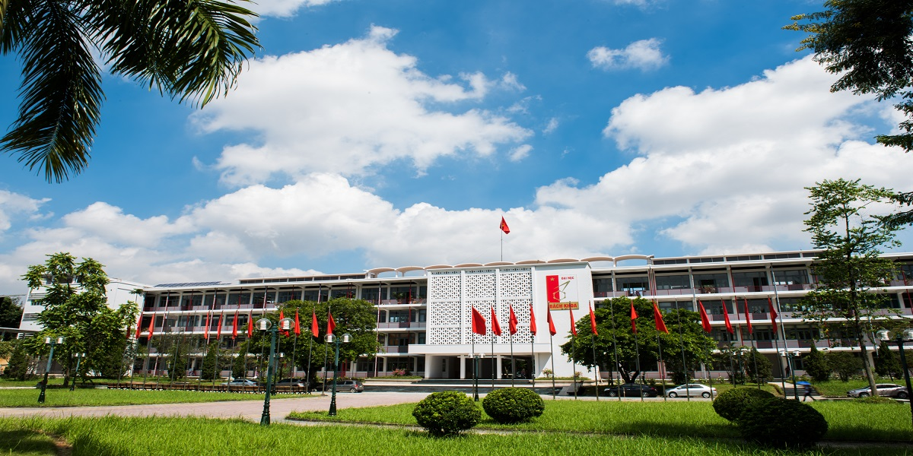

GIỚI THIỆU
tông quan

Trường Đại học Bách khoa Hà Nội (tên tiếng Anh Hanoi university of science and technology
– viết tắt HUST) được thành lập theo Nghị định số 147/NĐ ngày 6-3-1956
do Bộ trưởng Bộ Giáo dục Nguyễn Văn Huyên ký. Đây là trường đại học kỹ thuật
đầu tiên của nước ta có nhiệm vụ đào tạo kỹ sư công nghiệp cho công cuộc xây
dựng CNXH ở miền Bắc và đấu tranh giải phóng miền Nam; là trung tâm đào tạo,
nghiên cứu khoa học và công nghệ đa ngành, đa lĩnh vực; kết hợp chặt chẽ
giữa đào tạo với nghiên cứu khoa học nhằm tạo nguồn nhân lực chất lượng
cao và bồi dưỡng nhân tài khoa học, công nghệ; định hướng phát triển
thành đại học nghiên cứu ngang tầm với các đại học có uy tín trong khu vực
và trên thế giới.
Địa điểm trường và cơ sở vật chất kỹ thuật ban đầu

Sau hơn 2 tháng tìm kiếm, lựa chọn, Đông Dương học xá chính thức được chọn
làm địa điểm xây dựng trường ĐHBK Hà Nội. Cơ sở này nguyên là ký túc xá của
sinh viên 3 nước Đông Dương được xây dựng từ năm 1938, sau Cách mạng tháng
Tám năm 1945, đổi tên thành Việt Nam học xá. Khi tái chiếm Hà Nội, thực dân
Pháp biến Việt Nam học xá thành trại lính, trại giam và gọi là "Bốt Đông
Dương học xá". Bốt này, sau khi chính quyền cách mạng tiếp quản Thủ đô,
bộ đội ta đã rà phá mìn, dỡ hết dây thép gai và bàn giao lại cho Bộ Giáo
dục.